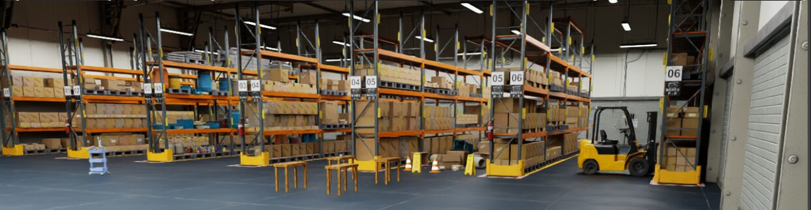
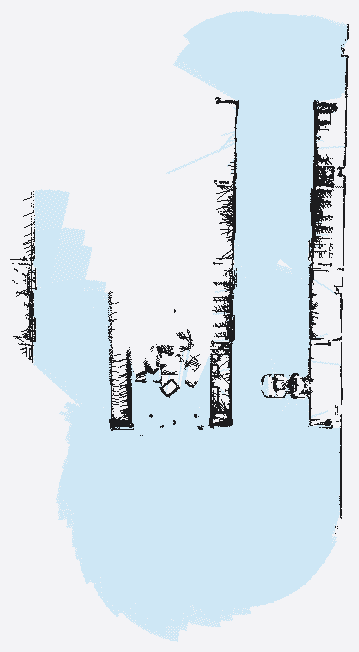
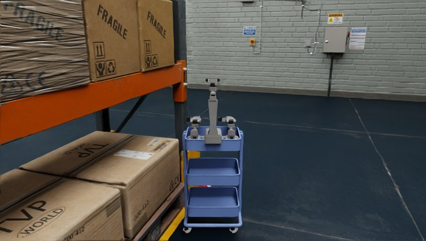

A fleet of mobile robots for indoor logistics that deploys in minutes — no per-facility infrastructure, no pre-built map. They map as they move, agree on what they found, and stay out of each other's way.
Simulated in Isaac Sim · ROS 2 Jazzy · built on XLeRobot
Per-robot perception & mapping
No lidar. A single head-mounted RGB-D camera has to both build the map and notice what is moving in front of it. A dynamic-obstacle filter erases movers from the mapper's copy and republishes them on their own channel — the map keeps the building, the navigator keeps the traffic. RTAB-Map runs per robot for visual-inertial SLAM and a 3D reconstruction.

Multi-robot coordination & comms
The project's stated novel contribution. Autonomy never looks up a peer on the transform tree — that would work in simulation and be a lie about the real warehouse. Each robot broadcasts its position estimate, motion intent, task status and detected obstructions over a mesh radio; that broadcast is the only peer information any decision may use. Task allocation is decentralized and location-based; when two intents cross, the lower-priority robot yields. A central task manager stays in the loop for oversight and fallback.

Interfaces, computer vision & manipulation
A web dashboard (React) takes operator task input and shows live robot state, a fleet-radio monitor, and a scenarios console that starts and stops runs. Computer vision reads packages by ArUco marker and barcode, and classifies obstacles — person or other robot — with YOLO. At the shelf, arm control solves inverse kinematics (MoveIt 2) for autonomous pick-and-place, docking a fixed offset short of the station.
operator dashboard, marker read, and arm cycle — see interfaces.html
System architecture
Autonomy is decentralized — every robot runs its own full stack and coordinates only over the radio — but a central task manager provides global oversight and a fallback path. The repository is not a standard colcon workspace: nodes are loose scripts launched by path. Two simulator tracks never share a shell — Isaac Sim for mobility, SLAM and Nav2; ManiSkill / XLeRobot for arm manipulation.
per-robot stack vs. fleet-shared nodes — diagrammed in architecture.html